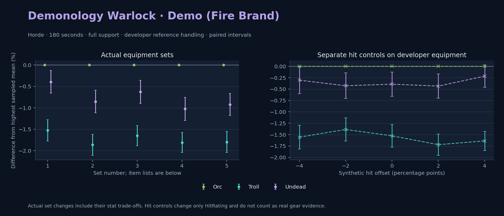

Horde · Orc / Troll / Undead

Pets / guardians: Imp, Voidwalker, Succubus, Felhunter · 161.3 DPS (21.2% of total). Reference: Orc, developer equipment, 180 seconds and full support. Pet choices remain those of the developer build.
WoWSims developer · Pre-raid (baseline fallback)
Unimplemented item effects: [{"id": 14153, "name": "Robe of the Void", "effects": ["Heal your pet for 600."]}]
Unimplemented enchant or active set effects: [{"id": 183, "pieces": 4, "effects": ["When struck in combat has a 2% chance of causing the attacker to flee in terror for 2s. Can only occur once every 60 sec."]}]
180 seconds, full support and original developer references. Hit below is generic sheet melee / spell hit; school and talent bonuses can be attached directly to spells.
| Race | DPS | Gap and interval | Generic hit | Replay |
|---|---|---|---|---|
| Orc | 761.42 | +0.000% ± 0.000 | 3.0% / 3.0% | Native input · Website JSON |
| Undead | 758.43 | -0.393% ± 0.265 | 3.0% / 3.0% | Native input · Website JSON |
| Troll | 749.79 | -1.527% ± 0.247 | 3.0% / 3.0% | Native input · Website JSON |
| Slot | Item | ID | Enchant |
|---|---|---|---|
| Head | Dreadmist Mask | 16698 | |
| Neck | Beads of Ogre Mojo | 22149 | |
| Shoulder | Dreadmist Mantle | 16701 | |
| Back | Arcanoweave Cloak | 272411 | |
| Chest | Robe of the Void | 14153 | |
| Wrist | Dreadmist Bracers | 16703 | |
| Hands | Dreadmist Wraps | 16705 | |
| Waist | Dreadmist Belt | 16702 | |
| Legs | Dreadmist Leggings | 16699 | |
| Feet | Dreadmist Sandals | 16704 | |
| Ring 1 | Jereman's Bauble | 275738 | |
| Ring 2 | Advisor's Ring | 19518 | |
| Trinket 1 | Weakness Analyzer | 272438 | |
| Trinket 2 | Jewel of the Guard Captain | 270225 | |
| Main hand | Darkspear Insurgent's Spellblade | 272083 | |
| Off hand | Truesilver Conduit | 249455 | |
| Ranged / relic | Lunar Wand | 15283 |
Published ranked alternatives · Published pre-raid
Recorded source replacements: [{"slot": "chest", "from": 17775, "to": 1716, "publishedAlternativeRank": 1, "publishedEpDelta": -0.9, "reason": "First published alternative compatible with the current WoWSims database, class, faction and occupied slots."}, {"slot": "feet", "from": 11822, "to": 275606, "publishedAlternativeRank": 1, "publishedEpDelta": -1, "reason": "First published alternative compatible with the current WoWSims database, class, faction and occupied slots."}, {"slot": "ranged", "from": 11748, "to": 249237, "publishedAlternativeRank": 1, "publishedEpDelta": -1.1, "reason": "First published alternative compatible with the current WoWSims database, class, faction and occupied slots."}]
180 seconds, full support and original developer references. Hit below is generic sheet melee / spell hit; school and talent bonuses can be attached directly to spells.
| Race | DPS | Gap and interval | Generic hit | Replay |
|---|---|---|---|---|
| Orc | 865.75 | +0.000% ± 0.000 | 4.7% / 4.7% | Native input · Website JSON |
| Undead | 858.36 | -0.853% ± 0.262 | 4.7% / 4.7% | Native input · Website JSON |
| Troll | 849.61 | -1.864% ± 0.245 | 4.7% / 4.7% | Native input · Website JSON |
| Slot | Item | ID | Enchant |
|---|---|---|---|
| Head | Dreadmist Mask | 16698 | Arcanum of Focus |
| Neck | Archlight Talisman | 15856 | Enchant Necklace - Spell Power |
| Shoulder | Mantle of the Timbermaw | 19050 | |
| Back | Arcanoweave Cloak | 272411 | |
| Chest | Robe of the Magi | 1716 | Mystic Rugged Armor Kit |
| Wrist | Dreadmist Bracers | 16703 | Enchant Bracer - Greater Spellpower |
| Hands | Gloves of Spell Mastery | 14146 | Mystic Rugged Armor Kit |
| Waist | Belt of the Archmage | 18405 | |
| Legs | Dreadmist Leggings | 16699 | Arcanum of Focus |
| Feet | Venomspew Footpads | 275606 | Mystic Rugged Armor Kit |
| Ring 1 | Blessed Band of Light | 272407 | |
| Ring 2 | Maiden's Circle | 13001 | |
| Trinket 1 | Weakness Analyzer | 272438 | |
| Trinket 2 | Rune of the Guard Captain | 19120 | |
| Main hand | Sageblade | 22383 | |
| Off hand | Spirit of Aquementas | 11904 | Enchant Off-Hand - Superior Intellect |
| Ranged / relic | Greater Eternal Wand | 249237 |
Published one-slot hit alternative · Published pre-raid
One source-listed alternative; at least 80% of the source slot score retained. Reported hit selects the contrast; only native stats determine simulation outcomes. This is an experimental combination, not an endorsed best set.
Recorded source replacements: [{"slot": "chest", "from": 17775, "to": 1716, "publishedAlternativeRank": 1, "publishedEpDelta": -0.9, "reason": "First published alternative compatible with the current WoWSims database, class, faction and occupied slots."}, {"slot": "feet", "from": 11822, "to": 275606, "publishedAlternativeRank": 1, "publishedEpDelta": -1, "reason": "First published alternative compatible with the current WoWSims database, class, faction and occupied slots."}, {"slot": "ranged", "from": 11748, "to": 249237, "publishedAlternativeRank": 1, "publishedEpDelta": -1.1, "reason": "First published alternative compatible with the current WoWSims database, class, faction and occupied slots."}]
180 seconds, full support and original developer references. Hit below is generic sheet melee / spell hit; school and talent bonuses can be attached directly to spells.
| Race | DPS | Gap and interval | Generic hit | Replay |
|---|---|---|---|---|
| Orc | 862.65 | +0.000% ± 0.000 | 5.7% / 5.7% | Native input · Website JSON |
| Undead | 857.24 | -0.628% ± 0.269 | 5.7% / 5.7% | Native input · Website JSON |
| Troll | 848.43 | -1.649% ± 0.236 | 5.7% / 5.7% | Native input · Website JSON |
| Slot | Item | ID | Enchant |
|---|---|---|---|
| Head | Dreadmist Mask | 16698 | Arcanum of Focus |
| Neck | Archlight Talisman | 15856 | Enchant Necklace - Spell Power |
| Shoulder | Mantle of the Timbermaw | 19050 | |
| Back | Arcanoweave Cloak | 272411 | |
| Chest | Robe of the Magi | 1716 | Mystic Rugged Armor Kit |
| Wrist | Dreadmist Bracers | 16703 | Enchant Bracer - Greater Spellpower |
| Hands | Gloves of Spell Mastery | 14146 | Mystic Rugged Armor Kit |
| Waist | Belt of the Archmage | 18405 | |
| Legs | Dreadmist Leggings | 16699 | Arcanum of Focus |
| Feet | Venomspew Footpads | 275606 | Mystic Rugged Armor Kit |
| Ring 1 | Blessed Band of Light | 272407 | |
| Ring 2 | Channeler's Ring | 272406 | |
| Trinket 1 | Weakness Analyzer | 272438 | |
| Trinket 2 | Rune of the Guard Captain | 19120 | |
| Main hand | Sageblade | 22383 | |
| Off hand | Spirit of Aquementas | 11904 | Enchant Off-Hand - Superior Intellect |
| Ranged / relic | Greater Eternal Wand | 249237 |
Published ranked alternatives · Published pre-raid
Recorded source replacements: [{"slot": "shoulder", "from": 227808, "to": 19050, "publishedAlternativeRank": 1, "publishedEpDelta": -10.6, "reason": "First published alternative compatible with the current WoWSims database, class, faction and occupied slots."}, {"slot": "waist", "from": 228190, "to": 18405, "publishedAlternativeRank": 1, "publishedEpDelta": -13.1, "reason": "First published alternative compatible with the current WoWSims database, class, faction and occupied slots."}, {"slot": "feet", "from": 11822, "to": 275606, "publishedAlternativeRank": 1, "publishedEpDelta": -1, "reason": "First published alternative compatible with the current WoWSims database, class, faction and occupied slots."}]
Unimplemented item effects: [{"id": 14153, "name": "Robe of the Void", "effects": ["Heal your pet for 600."]}]
180 seconds, full support and original developer references. Hit below is generic sheet melee / spell hit; school and talent bonuses can be attached directly to spells.
| Race | DPS | Gap and interval | Generic hit | Replay |
|---|---|---|---|---|
| Orc | 889.09 | +0.000% ± 0.000 | 4.9% / 4.9% | Native input · Website JSON |
| Undead | 879.98 | -1.025% ± 0.271 | 4.9% / 4.9% | Native input · Website JSON |
| Troll | 873.01 | -1.808% ± 0.233 | 4.9% / 4.9% | Native input · Website JSON |
| Slot | Item | ID | Enchant |
|---|---|---|---|
| Head | Dreamweave Circlet | 10041 | Arcanum of Focus |
| Neck | Archlight Talisman | 15856 | Enchant Necklace - Spell Power |
| Shoulder | Mantle of the Timbermaw | 19050 | |
| Back | Arcanoweave Cloak | 272411 | |
| Chest | Robe of the Void | 14153 | Mystic Rugged Armor Kit |
| Wrist | Runecloth Cuffs | 254123 | Enchant Bracer - Greater Spellpower |
| Hands | Gloves of Spell Mastery | 14146 | Mystic Rugged Armor Kit |
| Waist | Belt of the Archmage | 18405 | |
| Legs | Ghostweave Pants | 14144 | Arcanum of Focus |
| Feet | Venomspew Footpads | 275606 | Mystic Rugged Armor Kit |
| Ring 1 | Blessed Band of Light | 272407 | |
| Ring 2 | Maiden's Circle | 13001 | |
| Trinket 1 | Weakness Analyzer | 272438 | |
| Trinket 2 | Frozen Heart of the Mountain | 249469 | |
| Main hand | Sageblade | 22383 | |
| Off hand | Spirit of Aquementas | 11904 | Enchant Off-Hand - Superior Intellect |
| Ranged / relic | Brilliant Wand | 249385 |
Published one-slot hit alternative · Published pre-raid
One source-listed alternative; at least 80% of the source slot score retained. Reported hit selects the contrast; only native stats determine simulation outcomes. This is an experimental combination, not an endorsed best set.
Recorded source replacements: [{"slot": "shoulder", "from": 227808, "to": 19050, "publishedAlternativeRank": 1, "publishedEpDelta": -10.6, "reason": "First published alternative compatible with the current WoWSims database, class, faction and occupied slots."}, {"slot": "waist", "from": 228190, "to": 18405, "publishedAlternativeRank": 1, "publishedEpDelta": -13.1, "reason": "First published alternative compatible with the current WoWSims database, class, faction and occupied slots."}, {"slot": "feet", "from": 11822, "to": 275606, "publishedAlternativeRank": 1, "publishedEpDelta": -1, "reason": "First published alternative compatible with the current WoWSims database, class, faction and occupied slots."}]
Unimplemented item effects: [{"id": 14153, "name": "Robe of the Void", "effects": ["Heal your pet for 600."]}]
180 seconds, full support and original developer references. Hit below is generic sheet melee / spell hit; school and talent bonuses can be attached directly to spells.
| Race | DPS | Gap and interval | Generic hit | Replay |
|---|---|---|---|---|
| Orc | 886.42 | +0.000% ± 0.000 | 5.9% / 5.9% | Native input · Website JSON |
| Undead | 878.25 | -0.921% ± 0.259 | 5.9% / 5.9% | Native input · Website JSON |
| Troll | 870.49 | -1.797% ± 0.244 | 5.9% / 5.9% | Native input · Website JSON |
| Slot | Item | ID | Enchant |
|---|---|---|---|
| Head | Dreamweave Circlet | 10041 | Arcanum of Focus |
| Neck | Archlight Talisman | 15856 | Enchant Necklace - Spell Power |
| Shoulder | Mantle of the Timbermaw | 19050 | |
| Back | Arcanoweave Cloak | 272411 | |
| Chest | Robe of the Void | 14153 | Mystic Rugged Armor Kit |
| Wrist | Runecloth Cuffs | 254123 | Enchant Bracer - Greater Spellpower |
| Hands | Gloves of Spell Mastery | 14146 | Mystic Rugged Armor Kit |
| Waist | Belt of the Archmage | 18405 | |
| Legs | Ghostweave Pants | 14144 | Arcanum of Focus |
| Feet | Venomspew Footpads | 275606 | Mystic Rugged Armor Kit |
| Ring 1 | Blessed Band of Light | 272407 | |
| Ring 2 | Channeler's Ring | 272406 | |
| Trinket 1 | Weakness Analyzer | 272438 | |
| Trinket 2 | Frozen Heart of the Mountain | 249469 | |
| Main hand | Sageblade | 22383 | |
| Off hand | Spirit of Aquementas | 11904 | Enchant Off-Hand - Superior Intellect |
| Ranged / relic | Brilliant Wand | 249385 |
The same declared pool is available to every race. Each race keeps its best validation-sample set with its screening-selected racial policy. Separate samples confirm that choice, with fresh precision samples near the practical-loss boundary. Gaps use the highest sampled mean under that same duration, support and reference treatment as their reference. A zero reference gap does not certify a race; the main matrix also allows uncertainty in the leader.
| Pool | Seconds | Support | References | Race | DPS | Gap and interval | Racial policies / mana | Selected set | Generic hit: melee / spell | Replay |
|---|---|---|---|---|---|---|---|---|---|---|
| published-pre-raid | 60 | full | developer | Orc | 900.33 | +0.000% ± 0.0005,000 iterations | developer / developer / developerMana waits 0.0s | published-warlock-demonology-horde-b72d3c4ca7e3a3b0 | 4.9% / 4.9% | Input · Result · Stats |
| published-pre-raid | 60 | full | developer | Troll | 893.50 | -0.758% ± 0.1475,000 iterations | developer / developer / developerMana waits 0.0s | published-warlock-demonology-horde-b72d3c4ca7e3a3b0 | 4.9% / 4.9% | Input · Result · Stats |
| published-pre-raid | 60 | full | developer | Undead | 891.47 | -0.983% ± 0.1675,000 iterations | developer / developer / developerMana waits 0.0s | published-warlock-demonology-horde-b72d3c4ca7e3a3b0 | 4.9% / 4.9% | Input · Result · Stats |
| published-pre-raid | 60 | full | explicit | Orc | 900.33 | +0.000% ± 0.0005,000 iterations | developer / developer / developerMana waits 0.0s | published-warlock-demonology-horde-b72d3c4ca7e3a3b0 | 4.9% / 4.9% | Input · Result · Stats |
| published-pre-raid | 60 | full | explicit | Troll | 893.50 | -0.758% ± 0.1475,000 iterations | developer / developer / developerMana waits 0.0s | published-warlock-demonology-horde-b72d3c4ca7e3a3b0 | 4.9% / 4.9% | Input · Result · Stats |
| published-pre-raid | 60 | full | explicit | Undead | 891.47 | -0.983% ± 0.1675,000 iterations | developer / developer / developerMana waits 0.0s | published-warlock-demonology-horde-b72d3c4ca7e3a3b0 | 4.9% / 4.9% | Input · Result · Stats |
| published-pre-raid | 60 | self | developer | Orc | 844.89 | +0.000% ± 0.0005,000 iterations | developer / developer / developerMana waits 0.0s | published-warlock-demonology-horde-b72d3c4ca7e3a3b0 | 4.9% / 4.9% | Input · Result · Stats |
| published-pre-raid | 60 | self | developer | Troll | 835.70 | -1.088% ± 0.1505,000 iterations | developer / developer / developerMana waits 0.0s | published-warlock-demonology-horde-b72d3c4ca7e3a3b0 | 4.9% / 4.9% | Input · Result · Stats |
| published-pre-raid | 60 | self | developer | Undead | 835.51 | -1.110% ± 0.1685,000 iterations | developer / developer / developerMana waits 0.0s | published-warlock-demonology-horde-b72d3c4ca7e3a3b0 | 4.9% / 4.9% | Input · Result · Stats |
| published-pre-raid | 60 | self | explicit | Orc | 844.89 | +0.000% ± 0.0005,000 iterations | developer / developer / developerMana waits 0.0s | published-warlock-demonology-horde-b72d3c4ca7e3a3b0 | 4.9% / 4.9% | Input · Result · Stats |
| published-pre-raid | 60 | self | explicit | Troll | 835.70 | -1.088% ± 0.1505,000 iterations | developer / developer / developerMana waits 0.0s | published-warlock-demonology-horde-b72d3c4ca7e3a3b0 | 4.9% / 4.9% | Input · Result · Stats |
| published-pre-raid | 60 | self | explicit | Undead | 835.51 | -1.110% ± 0.1685,000 iterations | developer / developer / developerMana waits 0.0s | published-warlock-demonology-horde-b72d3c4ca7e3a3b0 | 4.9% / 4.9% | Input · Result · Stats |
| published-pre-raid | 180 | full | developer | Orc | 886.13 | +0.000% ± 0.0005,000 iterations | developer / developer / developerMana waits 0.0s | published-warlock-demonology-horde-b72d3c4ca7e3a3b0 | 4.9% / 4.9% | Input · Result · Stats · Website JSON |
| published-pre-raid | 180 | full | developer | Undead | 878.39 | -0.874% ± 0.1195,000 iterations | developer / developer / developerMana waits 0.1s | published-warlock-demonology-horde-b72d3c4ca7e3a3b0 | 4.9% / 4.9% | Input · Result · Stats · Website JSON |
| published-pre-raid | 180 | full | developer | Troll | 871.68 | -1.631% ± 0.1075,000 iterations | developer / developer / developerMana waits 0.0s | published-warlock-demonology-horde-b72d3c4ca7e3a3b0 | 4.9% / 4.9% | Input · Result · Stats · Website JSON |
| published-pre-raid | 180 | full | explicit | Orc | 886.13 | +0.000% ± 0.0005,000 iterations | developer / developer / developerMana waits 0.0s | published-warlock-demonology-horde-b72d3c4ca7e3a3b0 | 4.9% / 4.9% | Input · Result · Stats |
| published-pre-raid | 180 | full | explicit | Undead | 878.39 | -0.874% ± 0.1195,000 iterations | developer / developer / developerMana waits 0.1s | published-warlock-demonology-horde-b72d3c4ca7e3a3b0 | 4.9% / 4.9% | Input · Result · Stats |
| published-pre-raid | 180 | full | explicit | Troll | 871.68 | -1.631% ± 0.1075,000 iterations | developer / developer / developerMana waits 0.0s | published-warlock-demonology-horde-b72d3c4ca7e3a3b0 | 4.9% / 4.9% | Input · Result · Stats |
| published-pre-raid | 180 | self | developer | Orc | 820.01 | +0.000% ± 0.0005,000 iterations | developer / developer / developerMana waits 0.1s | published-warlock-demonology-horde-b72d3c4ca7e3a3b0 | 4.9% / 4.9% | Input · Result · Stats |
| published-pre-raid | 180 | self | developer | Undead | 809.95 | -1.227% ± 0.1175,000 iterations | developer / developer / developerMana waits 0.1s | published-warlock-demonology-horde-b72d3c4ca7e3a3b0 | 4.9% / 4.9% | Input · Result · Stats |
| published-pre-raid | 180 | self | developer | Troll | 805.53 | -1.765% ± 0.1115,000 iterations | developer / developer / developerMana waits 0.2s | published-warlock-demonology-horde-b72d3c4ca7e3a3b0 | 4.9% / 4.9% | Input · Result · Stats |
| published-pre-raid | 180 | self | explicit | Orc | 820.01 | +0.000% ± 0.0005,000 iterations | developer / developer / developerMana waits 0.1s | published-warlock-demonology-horde-b72d3c4ca7e3a3b0 | 4.9% / 4.9% | Input · Result · Stats |
| published-pre-raid | 180 | self | explicit | Undead | 809.95 | -1.227% ± 0.1175,000 iterations | developer / developer / developerMana waits 0.1s | published-warlock-demonology-horde-b72d3c4ca7e3a3b0 | 4.9% / 4.9% | Input · Result · Stats |
| published-pre-raid | 180 | self | explicit | Troll | 805.53 | -1.765% ± 0.1115,000 iterations | developer / developer / developerMana waits 0.2s | published-warlock-demonology-horde-b72d3c4ca7e3a3b0 | 4.9% / 4.9% | Input · Result · Stats |
| published-pre-raid | 300 | full | developer | Orc | 876.82 | +0.000% ± 0.0005,000 iterations | oncd / developer / developerMana waits 0.1s | published-warlock-demonology-horde-b72d3c4ca7e3a3b0 | 4.9% / 4.9% | Input · Result · Stats |
| published-pre-raid | 300 | full | developer | Undead | 869.32 | -0.855% ± 0.0975,000 iterations | developer / developer / developerMana waits 0.1s | published-warlock-demonology-horde-b72d3c4ca7e3a3b0 | 4.9% / 4.9% | Input · Result · Stats |
| published-pre-raid | 300 | full | developer | Troll | 863.18 | -1.556% ± 0.0905,000 iterations | developer / developer / developerMana waits 0.1s | published-warlock-demonology-horde-b72d3c4ca7e3a3b0 | 4.9% / 4.9% | Input · Result · Stats |
| published-pre-raid | 300 | full | explicit | Orc | 876.82 | +0.000% ± 0.0005,000 iterations | oncd / developer / developerMana waits 0.1s | published-warlock-demonology-horde-b72d3c4ca7e3a3b0 | 4.9% / 4.9% | Input · Result · Stats |
| published-pre-raid | 300 | full | explicit | Undead | 869.32 | -0.855% ± 0.0975,000 iterations | developer / developer / developerMana waits 0.1s | published-warlock-demonology-horde-b72d3c4ca7e3a3b0 | 4.9% / 4.9% | Input · Result · Stats |
| published-pre-raid | 300 | full | explicit | Troll | 863.18 | -1.556% ± 0.0905,000 iterations | developer / developer / developerMana waits 0.1s | published-warlock-demonology-horde-b72d3c4ca7e3a3b0 | 4.9% / 4.9% | Input · Result · Stats |
| published-pre-raid | 300 | self | developer | Orc | 813.30 | +0.000% ± 0.0005,000 iterations | oncd / developer / developerMana waits 0.2s | published-warlock-demonology-horde-b72d3c4ca7e3a3b0 | 4.9% / 4.9% | Input · Result · Stats |
| published-pre-raid | 300 | self | developer | Undead | 804.79 | -1.046% ± 0.0965,000 iterations | developer / developer / developerMana waits 0.2s | published-warlock-demonology-horde-b72d3c4ca7e3a3b0 | 4.9% / 4.9% | Input · Result · Stats |
| published-pre-raid | 300 | self | developer | Troll | 800.44 | -1.581% ± 0.0925,000 iterations | developer / developer / developerMana waits 0.2s | published-warlock-demonology-horde-b72d3c4ca7e3a3b0 | 4.9% / 4.9% | Input · Result · Stats |
| published-pre-raid | 300 | self | explicit | Orc | 813.30 | +0.000% ± 0.0005,000 iterations | oncd / developer / developerMana waits 0.2s | published-warlock-demonology-horde-b72d3c4ca7e3a3b0 | 4.9% / 4.9% | Input · Result · Stats |
| published-pre-raid | 300 | self | explicit | Undead | 804.79 | -1.046% ± 0.0965,000 iterations | developer / developer / developerMana waits 0.2s | published-warlock-demonology-horde-b72d3c4ca7e3a3b0 | 4.9% / 4.9% | Input · Result · Stats |
| published-pre-raid | 300 | self | explicit | Troll | 800.44 | -1.581% ± 0.0925,000 iterations | developer / developer / developerMana waits 0.2s | published-warlock-demonology-horde-b72d3c4ca7e3a3b0 | 4.9% / 4.9% | Input · Result · Stats |
| developer-reference | 60 | full | developer | Orc | 764.69 | +0.000% ± 0.0005,000 iterations | developer / developer / developerMana waits 0.0s | developer | 3.0% / 3.0% | Input · Result · Stats |
| developer-reference | 60 | full | developer | Undead | 761.78 | -0.381% ± 0.1755,000 iterations | developer / developer / developerMana waits 0.0s | developer | 3.0% / 3.0% | Input · Result · Stats |
| developer-reference | 60 | full | developer | Troll | 758.82 | -0.767% ± 0.1485,000 iterations | developer / developer / developerMana waits 0.0s | developer | 3.0% / 3.0% | Input · Result · Stats |
| developer-reference | 60 | full | explicit | Orc | 764.69 | +0.000% ± 0.0005,000 iterations | developer / developer / developerMana waits 0.0s | developer | 3.0% / 3.0% | Input · Result · Stats |
| developer-reference | 60 | full | explicit | Undead | 761.78 | -0.381% ± 0.1755,000 iterations | developer / developer / developerMana waits 0.0s | developer | 3.0% / 3.0% | Input · Result · Stats |
| developer-reference | 60 | full | explicit | Troll | 758.82 | -0.767% ± 0.1485,000 iterations | developer / developer / developerMana waits 0.0s | developer | 3.0% / 3.0% | Input · Result · Stats |
| developer-reference | 60 | self | developer | Orc | 730.43 | +0.000% ± 0.0005,000 iterations | developer / developer / developerMana waits 0.0s | developer | 3.0% / 3.0% | Input · Result · Stats |
| developer-reference | 60 | self | developer | Undead | 725.55 | -0.668% ± 0.1695,000 iterations | developer / developer / developerMana waits 0.0s | developer | 3.0% / 3.0% | Input · Result · Stats |
| developer-reference | 60 | self | developer | Troll | 723.37 | -0.967% ± 0.1475,000 iterations | developer / developer / developerMana waits 0.0s | developer | 3.0% / 3.0% | Input · Result · Stats |
| developer-reference | 60 | self | explicit | Orc | 730.43 | +0.000% ± 0.0005,000 iterations | developer / developer / developerMana waits 0.0s | developer | 3.0% / 3.0% | Input · Result · Stats |
| developer-reference | 60 | self | explicit | Undead | 725.55 | -0.668% ± 0.1695,000 iterations | developer / developer / developerMana waits 0.0s | developer | 3.0% / 3.0% | Input · Result · Stats |
| developer-reference | 60 | self | explicit | Troll | 723.37 | -0.967% ± 0.1475,000 iterations | developer / developer / developerMana waits 0.0s | developer | 3.0% / 3.0% | Input · Result · Stats |
| developer-reference | 180 | full | developer | Orc | 760.74 | +0.000% ± 0.0005,000 iterations | oncd / developer / developerMana waits 0.1s | developer | 3.0% / 3.0% | Input · Result · Stats · Website JSON |
| developer-reference | 180 | full | developer | Undead | 757.72 | -0.397% ± 0.1225,000 iterations | developer / developer / developerMana waits 0.1s | developer | 3.0% / 3.0% | Input · Result · Stats · Website JSON |
| developer-reference | 180 | full | developer | Troll | 748.68 | -1.585% ± 0.1105,000 iterations | developer / developer / developerMana waits 0.0s | developer | 3.0% / 3.0% | Input · Result · Stats · Website JSON |
| developer-reference | 180 | full | explicit | Orc | 760.74 | +0.000% ± 0.0005,000 iterations | oncd / developer / developerMana waits 0.1s | developer | 3.0% / 3.0% | Input · Result · Stats |
| developer-reference | 180 | full | explicit | Undead | 757.72 | -0.397% ± 0.1225,000 iterations | developer / developer / developerMana waits 0.1s | developer | 3.0% / 3.0% | Input · Result · Stats |
| developer-reference | 180 | full | explicit | Troll | 748.68 | -1.585% ± 0.1105,000 iterations | developer / developer / developerMana waits 0.0s | developer | 3.0% / 3.0% | Input · Result · Stats |
| developer-reference | 180 | self | developer | Orc | 703.83 | +0.000% ± 0.0005,000 iterations | developer / developer / developerMana waits 0.1s | developer | 3.0% / 3.0% | Input · Result · Stats |
| developer-reference | 180 | self | developer | Undead | 698.86 | -0.706% ± 0.1155,000 iterations | developer / developer / developerMana waits 0.1s | developer | 3.0% / 3.0% | Input · Result · Stats |
| developer-reference | 180 | self | developer | Troll | 693.23 | -1.506% ± 0.1125,000 iterations | developer / developer / developerMana waits 0.1s | developer | 3.0% / 3.0% | Input · Result · Stats |
| developer-reference | 180 | self | explicit | Orc | 703.83 | +0.000% ± 0.0005,000 iterations | developer / developer / developerMana waits 0.1s | developer | 3.0% / 3.0% | Input · Result · Stats |
| developer-reference | 180 | self | explicit | Undead | 698.86 | -0.706% ± 0.1155,000 iterations | developer / developer / developerMana waits 0.1s | developer | 3.0% / 3.0% | Input · Result · Stats |
| developer-reference | 180 | self | explicit | Troll | 693.23 | -1.506% ± 0.1125,000 iterations | developer / developer / developerMana waits 0.1s | developer | 3.0% / 3.0% | Input · Result · Stats |
| developer-reference | 300 | full | developer | Orc | 752.15 | +0.000% ± 0.0005,000 iterations | developer / developer / developerMana waits 0.1s | developer | 3.0% / 3.0% | Input · Result · Stats |
| developer-reference | 300 | full | developer | Undead | 749.78 | -0.315% ± 0.0985,000 iterations | developer / developer / developerMana waits 0.1s | developer | 3.0% / 3.0% | Input · Result · Stats |
| developer-reference | 300 | full | developer | Troll | 741.05 | -1.476% ± 0.0925,000 iterations | developer / developer / developerMana waits 0.1s | developer | 3.0% / 3.0% | Input · Result · Stats |
| developer-reference | 300 | full | explicit | Orc | 752.15 | +0.000% ± 0.0005,000 iterations | developer / developer / developerMana waits 0.1s | developer | 3.0% / 3.0% | Input · Result · Stats |
| developer-reference | 300 | full | explicit | Undead | 749.78 | -0.315% ± 0.0985,000 iterations | developer / developer / developerMana waits 0.1s | developer | 3.0% / 3.0% | Input · Result · Stats |
| developer-reference | 300 | full | explicit | Troll | 741.05 | -1.476% ± 0.0925,000 iterations | developer / developer / developerMana waits 0.1s | developer | 3.0% / 3.0% | Input · Result · Stats |
| developer-reference | 300 | self | developer | Orc | 699.17 | +0.000% ± 0.0005,000 iterations | developer / developer / developerMana waits 0.1s | developer | 3.0% / 3.0% | Input · Result · Stats |
| developer-reference | 300 | self | developer | Undead | 694.50 | -0.667% ± 0.0965,000 iterations | developer / developer / developerMana waits 0.1s | developer | 3.0% / 3.0% | Input · Result · Stats |
| developer-reference | 300 | self | developer | Troll | 688.79 | -1.484% ± 0.0945,000 iterations | developer / developer / developerMana waits 0.2s | developer | 3.0% / 3.0% | Input · Result · Stats |
| developer-reference | 300 | self | explicit | Orc | 699.17 | +0.000% ± 0.0005,000 iterations | developer / developer / developerMana waits 0.1s | developer | 3.0% / 3.0% | Input · Result · Stats |
| developer-reference | 300 | self | explicit | Undead | 694.50 | -0.667% ± 0.0965,000 iterations | developer / developer / developerMana waits 0.1s | developer | 3.0% / 3.0% | Input · Result · Stats |
| developer-reference | 300 | self | explicit | Troll | 688.79 | -1.484% ± 0.0945,000 iterations | developer / developer / developerMana waits 0.2s | developer | 3.0% / 3.0% | Input · Result · Stats |
180 seconds, full support and the developer equipment anchor. These checks test creature sensitivity without a full gear search.
| Target | References | Race | DPS | Gap and interval | Replay |
|---|---|---|---|---|---|
| beast | developer | Troll | 779.63 | +0.000% ± 0.000 | Input · Result |
| beast | developer | Orc | 761.42 | -2.336% ± 0.247 | Input · Result |
| beast | developer | Undead | 758.43 | -2.719% ± 0.271 | Input · Result |
| beast | explicit | Troll | 779.63 | +0.000% ± 0.000 | Input · Result |
| beast | explicit | Orc | 761.42 | -2.336% ± 0.247 | Input · Result |
| beast | explicit | Undead | 758.43 | -2.719% ± 0.271 | Input · Result |
| elemental | developer | Orc | 761.42 | +0.000% ± 0.000 | Input · Result |
| elemental | developer | Undead | 758.43 | -0.393% ± 0.265 | Input · Result |
| elemental | developer | Troll | 749.79 | -1.527% ± 0.247 | Input · Result |
| elemental | explicit | Orc | 761.42 | +0.000% ± 0.000 | Input · Result |
| elemental | explicit | Undead | 758.43 | -0.393% ± 0.265 | Input · Result |
| elemental | explicit | Troll | 749.79 | -1.527% ± 0.247 | Input · Result |
Some equipment has unimplemented item effects; Some equipment has unimplemented enchant or set effects
These known-issue notes are source context. Runtime checks establish current cast coverage, including Mutilate. They do not prove every mechanic matches the game.